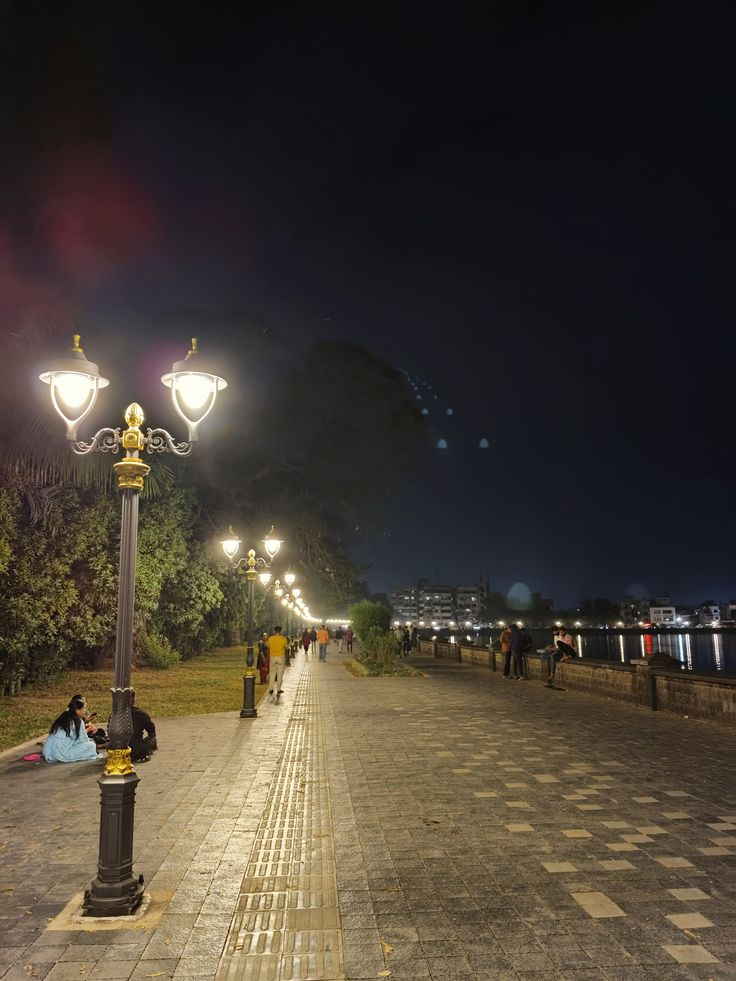
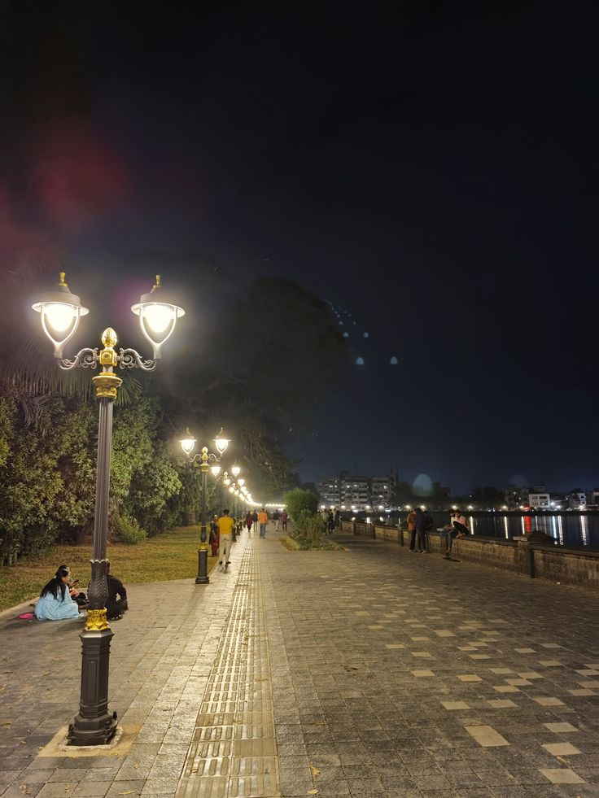
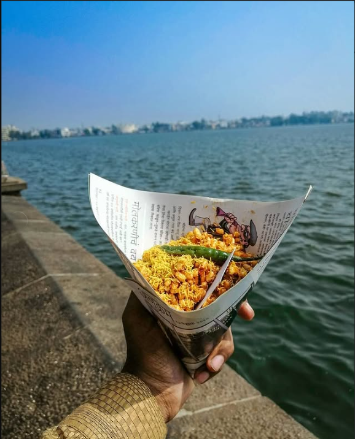
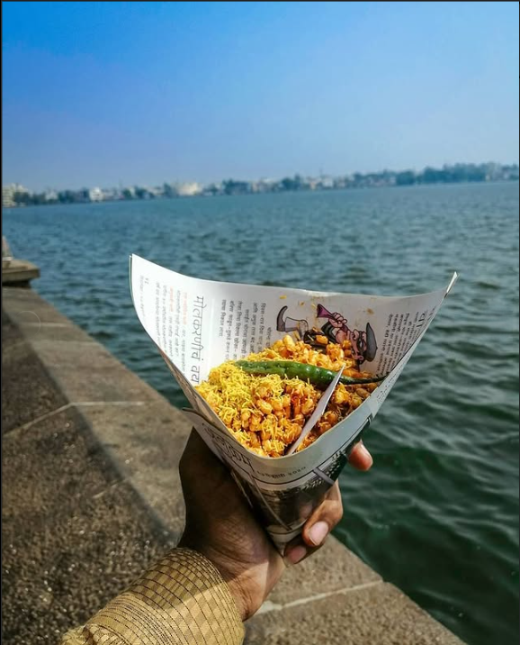

Rankala Lake - A Historic & Scenic Landmark
Rankala Lake, located near the Ambabai Temple in Kolhapur, is a popular recreational spot built by Maharajah Shahu Chhatrapati. Surrounded by gardens and the iconic Shalini Palace, Maharashtra’s only star-rated palace hotel, it offers a vibrant atmosphere with street food delights like Bhel-Puri and Ragda-Patties.
Rankala Lake has witnessed significant events dating back to 750-850 AD. Once a black stone mine, earthquakes in the 9th century transformed it into a lake. It features notable landmarks such as the grand Nandi idol, Sandhya Math, and scenic ghats like Rajghat and Maratha Ghat. The lake has also been a hub for the film industry, with many movies shot at the nearby ShantKiran Studio, founded by filmmaker V. Shantaram.

Key Features & Activities:
- Tranquil Setting: Rankala Lake is known for its peaceful atmosphere, surrounded by beautiful gardens and temples, making it an ideal spot for relaxation and quiet enjoyment.
- Historical Significance: The lake was constructed by late Maharajah, Shri Shahu Chhatrapati and is an integral part of Kolhapur's heritage, with numerous temples and monuments adorning its banks.
- Boating: You can enjoy boating activities on the lake, adding to the adventure and appeal.
- Chaupati & Food Stalls: The lake area features a Chaupati (a promenade) with various food stalls offering local snacks like bhel-puri and ragda-patties.
- Walking Track & Gardens: There's a nice walking track and well-maintained gardens around the lake, perfect for leisurely strolls.
- Shalini Palace: The majestic Shalini Palace, a star-rated Palace Hotel in Maharashtra, stands in the backdrop of the lake.
- Children's Play Areas: There are also children's play areas available.
- Historical Transformation: The lake was originally a stone quarry, which transformed into a lake after an earthquake in the 9th century AD.
- Legend of Nandi: There's a legend about a mammoth sculpture of Nandi (the bull, the vehicle of Lord Shiva) that moves a distance of a single wheat grain towards the lake and back a distance of a single rice grain daily.
- Film Industry History: Kolhapur was once a center for the film industry, with many Marathi and Hindi movies being shot in studios like ShantKiran Studio on Rankala Lake.
- Nearby Attractions: Located near the Mahalakshmi Temple, the lake is a popular evening spot and recreation center.
Tips:
- Best time to visit: morning or evening.
- Many food vendors available.
- Boating and horse riding are available.
Discover the Beauty of Rankala Lake
.jpeg) 



 

Local Map
Nearby Attractions & Must-Visit Places